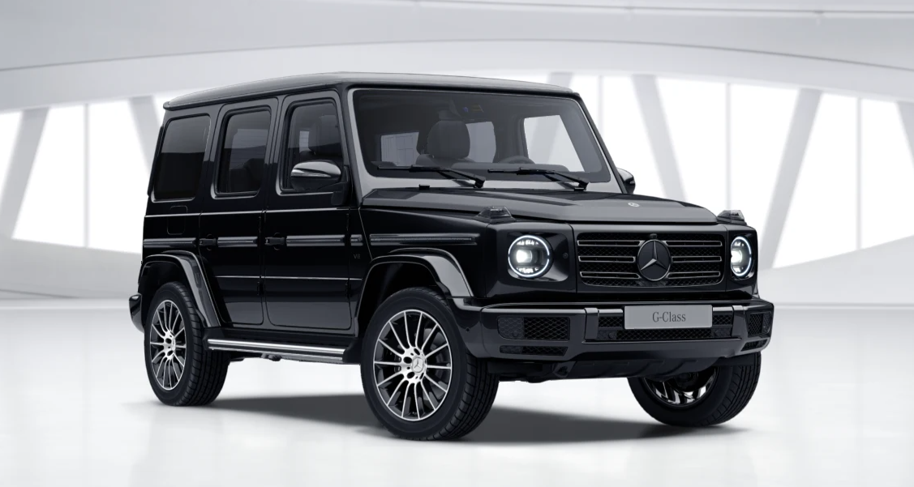
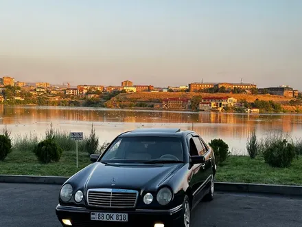
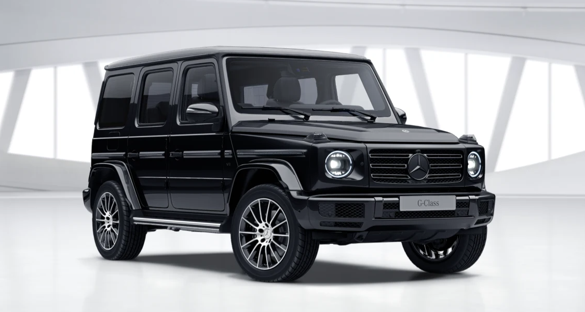
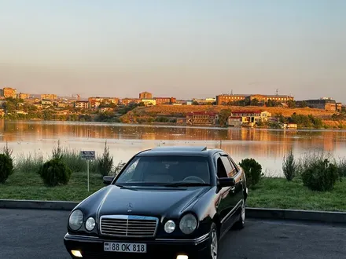

Mers haqida
Mercedes-Benz avtobus va yuk avtoulovlari brendidir. Mercedes-Benz shtab-kvartirasi
Shtutgartda joylashgan. Mercedes-Benz Audi va BMW qatorida „Olmoniya katta uchligiga“ kirib,
dunyo boʻylab eng koʻp luks avtomobil sotadigan ishlab chiqaruvchilardan biridir.[
 



Uning brendi 2010-yil 25,2 mlrd Aqsh Dollari deb belgilangan. nr
U Yengil avtomobillar brend narxi boʻyicha 2-oʻrinni band etib turibdi.(2010).
2021-yil mart oyida „Mercedes-Benz“ Xitoy bozoridan 2,6 million avtomobilni qaytarib olishga qaror qildi.
Qaror ushbu mamlakatda ishlab chiqarilib, import qilingan avtomobillarga ham, modellarga ham tegishli boʻladi.